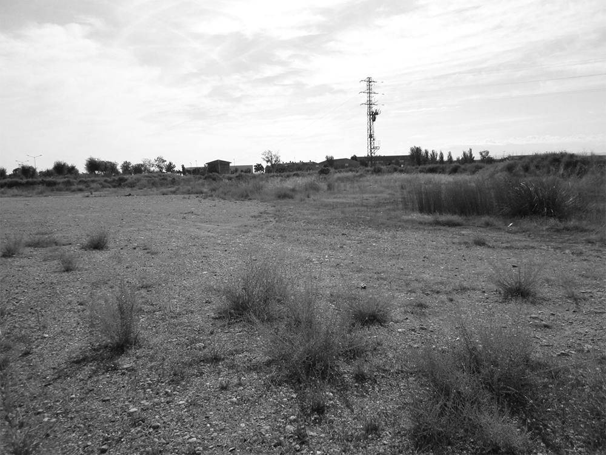
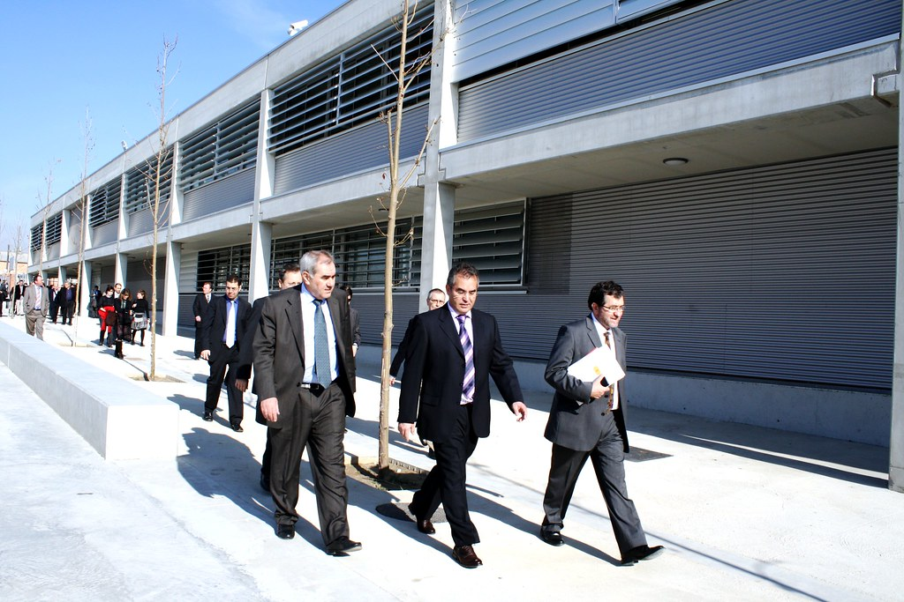
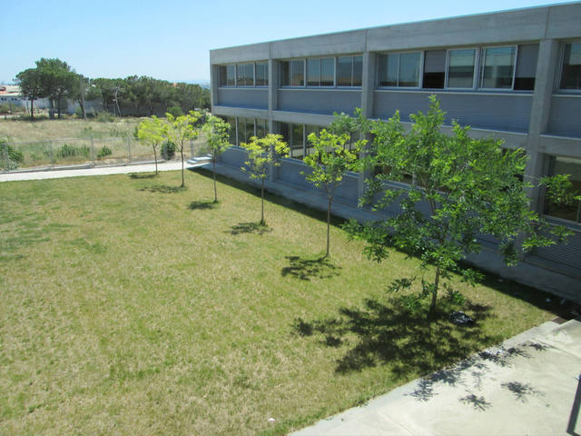

|  | Quaranta anys enrere les terres que ara ocupa l’Institut eren una zona pràcticament erma. La naturalesa esquerpa de la serra, el sol que la colpeja , el silenci de les migdiades la convertien en un escenari inhòspit, salvatge, adient per a aventures adolescents, algunes inspirades encara en la memòria col·lectiva de la guerra civil, alimentada per restes de metralla que esporàdicament s’hi trobaven. El component de misteri va anar desapareixent a mesura que s’anaven construint les instal·lacions dels diversos serveis educatius que ara s'hi allotgen. La “colonització” fou difícil per la precarietat dels mitjans i la climatologia sovint adversa: les boires de l’hivern desorientaven i convertien en cavallers errants alguns estudiants que hi arribaven amb moto, el telèfon es presentà amb retard, el mobiliari era escàs… irònicament podríem dir que, a escala local, era com la conquesta del “far-west”. |
El centre s’inaugura l’any 80, període de la transició, anys en què estava fermentant l’esperit democràtic: reivindicacions nacionalistes, la lluita pels drets de la dona, els debats sobre la incorporació a l’OTAN eren símptomes d’un despertar de la consciència política. Les publicacions educatives reflectien aquests canvis. Per exemple, la revista “Nonius”, on col·laboraven els centres de FP de Lleida, recollia articles amb els següents titulars: “La pau i el desarmament”, “Llengua i societat als Països Catalans”, “La mujer: el olvido de la historia”, “Autoritarismo y permisividad en la educación”. |
 |
 |
Des d’un punt de vista econòmic és també un període de transformacions importants. La incorporació d’Espanya a la UE l’any 86 exigeix que les empreses esdevinguin més competitives i, per tant, que hagin d’incorporar noves tecnologies -la microelectrònica, la informàtica, l’ofimàtica, les innnovacions en telecomunicacions…- i necessitin lògicament d’una qualificació professional dels seus treballadors. L’economia de Lleida experimentarà durant les dues darreres dècades d’aquest segle canvis estructurals significatius: En el sector primari, es dedicarà a les tasques agràries una proporció de joves més petita que la que es detecta en generacions anteriors, el que equival a un procés de selecció que superarà la part de la pagesia més preparada, amb més visió de futur i que hagi sabut incorporar les noves tècniques de conreu i els productes que el nou ordre europeu demana. Malgrat aquest fet, el sector primari continuarà tenint una presència important en l’economia lleidatana, superant el pes intern que aquesta activitat té en altres unitats territorials com ara Catalunya o la UE. |
El sector secundari requerirà efectius joves, més preparats i amb un grau d’especialització, que permeti la modernització de les estructures productives necessàries per tal de constituir empreses competitives. Finalment, el sector en clara expansió i que acull de manera més notòria les entrades d’actius joves serà el terciari. Aquest sector, a més d’esdevenir alternativa per la reducció d’altres activitats, captarà una entrada superior de població femenina que troba en aquest camp les oportunitats més clares d’incorporació al mercat de treball. Tradicionalment Lleida ha estat una ciutat comercial i de serveis, que ha estès el seu radi d’acció més enllà dels límits provincials -molts pobles de la Franja d’Aragó nodreixen el comerç de la ciutat- i que ha gaudit del privilegi geogràfic de no tenir a 100 Km al voltant cap centre comercial de la seva dimensió i grandària.. L’anàlisi sectorial de la població activa de l’any 1991 reflecteix la vitalitat d’aquest sector: el 56.01% dels ocupats treballaven en l’àrea de serveis, el 19’78 % en la indústria, el 15’39% en l’agricultura i ramaderia i el 8’82 % en la construcció. |
|
|  | El creixement i la diversificació que viu la FP responen a aquesta evolució de l’economia que exigeix operaris qualificats. En aquest context cal situar el naixement de l’I F P “Caparrella” l’any 1980 com una escissió de l’Escola del Treball on s’impartiran inicialment les branques d’Automoció, Administrativa, Electricitat i Electrònica. Aquests estudis s’ampliaren el curs 1982-83 amb les especialitats de Perruqueria i Informàtica, alhora que es traslladava la branca d’Electricitat a l’Escola del Treball El creixement, tant a nivell acadèmic com d’alumnat, obligà a una nova divisió que es concretà en la creació el curs 1991-92 de l’IES “Torrevicens” on s’ubicaren les línies d’Auxiliar Sanitari i Perruqueria. |